One Shot Learning with Siamese Networks#
This is the jupyter notebook that accompanies
Imports#
All the imports are defined here
%matplotlib inline
import torchvision
import torchvision.datasets as dset
import torchvision.transforms as transforms
from torch.utils.data import DataLoader, Dataset
import matplotlib.pyplot as plt
import torchvision.utils
import numpy as np
import random
from PIL import Image
import torch
from torch.autograd import Variable
import PIL.ImageOps
import torch.nn as nn
from torch import optim
import torch.nn.functional as F
Helper functions#
Set of helper functions
def imshow(img, text=None, should_save=False):
npimg = img.numpy()
plt.axis("off")
if text:
plt.text(
75,
8,
text,
style="italic",
fontweight="bold",
bbox={"facecolor": "white", "alpha": 0.8, "pad": 10},
)
plt.imshow(np.transpose(npimg, (1, 2, 0)))
plt.show()
def show_plot(iteration, loss):
plt.plot(iteration, loss)
plt.show()
Configuration Class#
A simple class to manage configuration
class Config:
training_dir = "./data/faces/training/"
testing_dir = "./data/faces/testing/"
train_batch_size = 64
train_number_epochs = 100
Custom Dataset Class#
This dataset generates a pair of images. 0 for geniune pair and 1 for imposter pair
class SiameseNetworkDataset(Dataset):
def __init__(self, imageFolderDataset, transform=None, should_invert=True):
self.imageFolderDataset = imageFolderDataset
self.transform = transform
self.should_invert = should_invert
def __getitem__(self, index):
img0_tuple = random.choice(self.imageFolderDataset.imgs)
# we need to make sure approx 50% of images are in the same class
should_get_same_class = random.randint(0, 1)
if should_get_same_class:
while True:
# keep looping till the same class image is found
img1_tuple = random.choice(self.imageFolderDataset.imgs)
if img0_tuple[1] == img1_tuple[1]:
break
else:
while True:
# keep looping till a different class image is found
img1_tuple = random.choice(self.imageFolderDataset.imgs)
if img0_tuple[1] != img1_tuple[1]:
break
img0 = Image.open(img0_tuple[0])
img1 = Image.open(img1_tuple[0])
img0 = img0.convert("L")
img1 = img1.convert("L")
if self.should_invert:
img0 = PIL.ImageOps.invert(img0)
img1 = PIL.ImageOps.invert(img1)
if self.transform is not None:
img0 = self.transform(img0)
img1 = self.transform(img1)
return (
img0,
img1,
torch.from_numpy(
np.array([int(img1_tuple[1] != img0_tuple[1])], dtype=np.float32)
),
)
def __len__(self):
return len(self.imageFolderDataset.imgs)
Using Image Folder Dataset#
folder_dataset = dset.ImageFolder(root=Config.training_dir)
siamese_dataset = SiameseNetworkDataset(
imageFolderDataset=folder_dataset,
transform=transforms.Compose(
[transforms.Resize((100, 100)), transforms.ToTensor()]
),
should_invert=False,
)
Visualising some of the data#
The top row and the bottom row of any column is one pair. The 0s and 1s correspond to the column of the image. 1 indiciates dissimilar, and 0 indicates similar.
vis_dataloader = DataLoader(siamese_dataset, shuffle=True, num_workers=8, batch_size=8)
dataiter = iter(vis_dataloader)
example_batch = next(dataiter)
concatenated = torch.cat((example_batch[0], example_batch[1]), 0)
imshow(torchvision.utils.make_grid(concatenated))
print(example_batch[2].numpy())
[[1.]
[1.]
[0.]
[0.]
[1.]
[1.]
[1.]
[1.]]
Neural Net Definition#
We will use a standard convolutional neural network
class SiameseNetwork(nn.Module):
def __init__(self):
super(SiameseNetwork, self).__init__()
self.cnn1 = nn.Sequential(
nn.ReflectionPad2d(1),
nn.Conv2d(1, 4, kernel_size=3),
nn.ReLU(inplace=True),
nn.BatchNorm2d(4),
nn.ReflectionPad2d(1),
nn.Conv2d(4, 8, kernel_size=3),
nn.ReLU(inplace=True),
nn.BatchNorm2d(8),
nn.ReflectionPad2d(1),
nn.Conv2d(8, 8, kernel_size=3),
nn.ReLU(inplace=True),
nn.BatchNorm2d(8),
)
self.fc1 = nn.Sequential(
nn.Linear(8 * 100 * 100, 500),
nn.ReLU(inplace=True),
nn.Linear(500, 500),
nn.ReLU(inplace=True),
nn.Linear(500, 5),
)
def forward_once(self, x):
output = self.cnn1(x)
output = output.view(output.size()[0], -1)
output = self.fc1(output)
return output
def forward(self, input1, input2):
output1 = self.forward_once(input1)
output2 = self.forward_once(input2)
return output1, output2
Contrastive Loss#
class ContrastiveLoss(torch.nn.Module):
"""
Contrastive loss function.
Based on: http://yann.lecun.com/exdb/publis/pdf/hadsell-chopra-lecun-06.pdf
"""
def __init__(self, margin=2.0):
super(ContrastiveLoss, self).__init__()
self.margin = margin
def forward(self, output1, output2, label):
euclidean_distance = F.pairwise_distance(output1, output2, keepdim=True)
loss_contrastive = torch.mean(
(1 - label) * torch.pow(euclidean_distance, 2)
+ (label)
* torch.pow(torch.clamp(self.margin - euclidean_distance, min=0.0), 2)
)
return loss_contrastive
Training Time!#
train_dataloader = DataLoader(
siamese_dataset, shuffle=True, num_workers=8, batch_size=Config.train_batch_size
)
net = SiameseNetwork().cuda()
criterion = ContrastiveLoss()
optimizer = optim.Adam(net.parameters(), lr=0.0005)
counter = []
loss_history = []
iteration_number = 0
for epoch in range(0, Config.train_number_epochs):
for i, data in enumerate(train_dataloader, 0):
img0, img1, label = data
img0, img1, label = img0.cuda(), img1.cuda(), label.cuda()
optimizer.zero_grad()
output1, output2 = net(img0, img1)
loss_contrastive = criterion(output1, output2, label)
loss_contrastive.backward()
optimizer.step()
if i % 10 == 0:
print(
"Epoch number {}\n Current loss {}\n".format(
epoch, loss_contrastive.item()
)
)
iteration_number += 10
counter.append(iteration_number)
loss_history.append(loss_contrastive.item())
show_plot(counter, loss_history)
Epoch number 0
Current loss 2.0378851890563965
Epoch number 1
Current loss 2.8077077865600586
Epoch number 2
Current loss 1.4288808107376099
Epoch number 3
Current loss 1.273261547088623
Epoch number 4
Current loss 1.1692599058151245
Epoch number 5
Current loss 1.0952510833740234
Epoch number 6
Current loss 1.2235523462295532
Epoch number 7
Current loss 1.1519213914871216
Epoch number 8
Current loss 1.1717911958694458
Epoch number 9
Current loss 1.1029901504516602
Epoch number 10
Current loss 1.1344356536865234
Epoch number 11
Current loss 1.17781400680542
Epoch number 12
Current loss 1.129368543624878
Epoch number 13
Current loss 1.1467115879058838
Epoch number 14
Current loss 1.163444995880127
Epoch number 15
Current loss 1.1398472785949707
Epoch number 16
Current loss 1.1301088333129883
Epoch number 17
Current loss 1.0887219905853271
Epoch number 18
Current loss 1.140424370765686
Epoch number 19
Current loss 1.0663241147994995
Epoch number 20
Current loss 1.08632230758667
Epoch number 21
Current loss 1.1327917575836182
Epoch number 22
Current loss 1.1568373441696167
Epoch number 23
Current loss 1.070037841796875
Epoch number 24
Current loss 1.1004447937011719
Epoch number 25
Current loss 1.1675760746002197
Epoch number 26
Current loss 1.107505202293396
Epoch number 27
Current loss 1.164154052734375
Epoch number 28
Current loss 1.1572291851043701
Epoch number 29
Current loss 1.0625216960906982
Epoch number 30
Current loss 1.0926334857940674
Epoch number 31
Current loss 1.1182385683059692
Epoch number 32
Current loss 1.1999294757843018
Epoch number 33
Current loss 1.0879995822906494
Epoch number 34
Current loss 1.1144282817840576
Epoch number 35
Current loss 1.1479668617248535
Epoch number 36
Current loss 1.1063014268875122
Epoch number 37
Current loss 1.1686123609542847
Epoch number 38
Current loss 1.1108856201171875
Epoch number 39
Current loss 1.0782051086425781
Epoch number 40
Current loss 1.0159437656402588
Epoch number 41
Current loss 1.0994377136230469
Epoch number 42
Current loss 1.101317286491394
Epoch number 43
Current loss 1.068577527999878
Epoch number 44
Current loss 1.109604835510254
Epoch number 45
Current loss 1.1685329675674438
Epoch number 46
Current loss 1.1148097515106201
Epoch number 47
Current loss 1.125104308128357
Epoch number 48
Current loss 1.123309850692749
Epoch number 49
Current loss 1.1074304580688477
Epoch number 50
Current loss 1.0960524082183838
Epoch number 51
Current loss 1.1231727600097656
Epoch number 52
Current loss 1.0602667331695557
Epoch number 53
Current loss 1.1933255195617676
Epoch number 54
Current loss 1.0731847286224365
Epoch number 55
Current loss 1.1229645013809204
Epoch number 56
Current loss 1.1323256492614746
Epoch number 57
Current loss 1.1582694053649902
Epoch number 58
Current loss 1.087444543838501
Epoch number 59
Current loss 1.112156867980957
Epoch number 60
Current loss 1.1236321926116943
Epoch number 61
Current loss 1.089324951171875
Epoch number 62
Current loss 1.151943325996399
Epoch number 63
Current loss 1.0736372470855713
Epoch number 64
Current loss 1.0705881118774414
Epoch number 65
Current loss 1.0880753993988037
Epoch number 66
Current loss 1.0668013095855713
Epoch number 67
Current loss 1.0845987796783447
Epoch number 68
Current loss 1.117438554763794
Epoch number 69
Current loss 1.1109552383422852
Epoch number 70
Current loss 1.0705968141555786
Epoch number 71
Current loss 1.0489232540130615
Epoch number 72
Current loss 1.0667352676391602
Epoch number 73
Current loss 1.1204578876495361
Epoch number 74
Current loss 1.0965818166732788
Epoch number 75
Current loss 1.1749546527862549
Epoch number 76
Current loss 1.1329829692840576
Epoch number 77
Current loss 1.1027050018310547
Epoch number 78
Current loss 1.0796157121658325
Epoch number 79
Current loss 1.0907905101776123
Epoch number 80
Current loss 1.0403797626495361
Epoch number 81
Current loss 1.1375505924224854
Epoch number 82
Current loss 1.143746256828308
Epoch number 83
Current loss 1.0821889638900757
Epoch number 84
Current loss 1.1218210458755493
Epoch number 85
Current loss 1.08035147190094
Epoch number 86
Current loss 1.0216319561004639
Epoch number 87
Current loss 1.0868322849273682
Epoch number 88
Current loss 1.1195446252822876
Epoch number 89
Current loss 1.1785082817077637
Epoch number 90
Current loss 1.0771337747573853
Epoch number 91
Current loss 1.0936869382858276
Epoch number 92
Current loss 1.1433212757110596
Epoch number 93
Current loss 1.153044581413269
Epoch number 94
Current loss 1.103136420249939
Epoch number 95
Current loss 1.1112598180770874
Epoch number 96
Current loss 1.0496973991394043
Epoch number 97
Current loss 1.0448846817016602
Epoch number 98
Current loss 1.1437416076660156
Epoch number 99
Current loss 1.1138417720794678
Some simple testing#
The last 3 subjects were held out from the training, and will be used to test. The Distance between each image pair denotes the degree of similarity the model found between the two images. Less means it found more similar, while higher values indicate it found them to be dissimilar.
folder_dataset_test = dset.ImageFolder(root=Config.testing_dir)
siamese_dataset = SiameseNetworkDataset(
imageFolderDataset=folder_dataset_test,
transform=transforms.Compose(
[transforms.Resize((100, 100)), transforms.ToTensor()]
),
should_invert=False,
)
test_dataloader = DataLoader(siamese_dataset, num_workers=6, batch_size=1, shuffle=True)
dataiter = iter(test_dataloader)
x0, _, _ = next(dataiter)
for i in range(10):
_, x1, label2 = next(dataiter)
concatenated = torch.cat((x0, x1), 0)
output1, output2 = net(Variable(x0).cuda(), Variable(x1).cuda())
euclidean_distance = F.pairwise_distance(output1, output2)
imshow(
torchvision.utils.make_grid(concatenated),
"Dissimilarity: {:.2f}".format(euclidean_distance.item()),
)
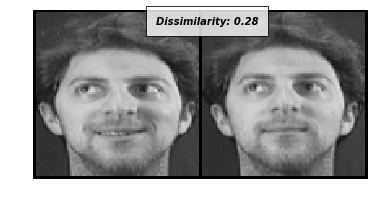
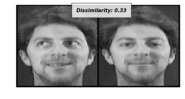
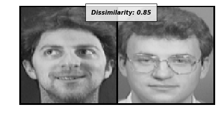
 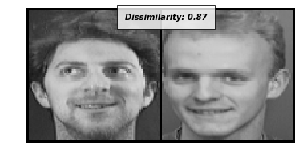
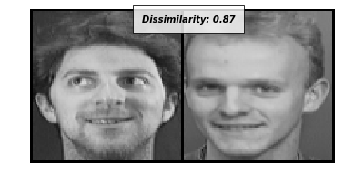

 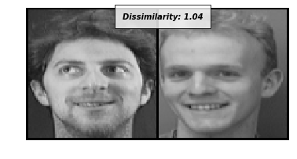
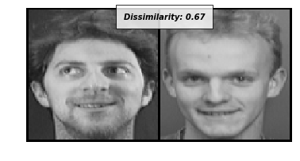
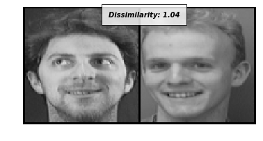
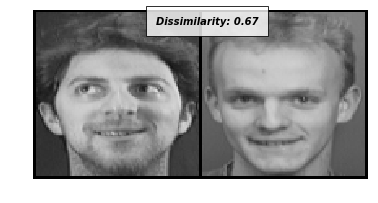
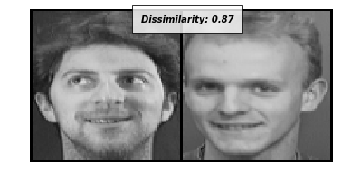
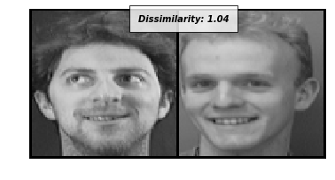
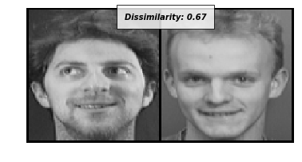